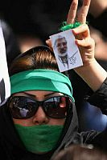

|
|
|
Browsing
Contact Us |
Campaigners |
Face to Face |
Tribune |
Interview |
News |
On the Web |
One Million |
Report
Farsi | Français | German | Italian | Spanish | العربية Also in this section
|
 IRAN: Women at Forefront of Popular DefianceBy: Sara Farhang Wednesday 1 July 2009 TEHRAN, Jun 25 (IPS) - When tens of thousands of protesters braved the ongoing government crackdown to gather in Tehran’s Baharestan Square in front of the Parliament building Wednesday in response to a call by supporters of Mir Hossein Moussavi and Mehdi Karroubi, they were met with some of the harshest violence seen since Iran’s post-election turmoil erupted nearly two weeks ago. "All of a sudden some 500 people with clubs... came out of [a nearby mosque], and they poured into the streets and they started beating everyone," an unidentified woman told CNN, describing the scene as a "massacre". "They beat a woman so savagely that she was drenched in blood, and her husband who was watching the scene, he just fainted," the witness said. Indeed, despite the heavy use of force to disperse crowds and recent violence that has left hundreds injured and dead, women were present in high numbers at the square, as they have been throughout the crisis. "I am so proud of Iranian women who show up for these protests," a female protester told IPS, confirming that women at the scene were targeted by security forces and were beaten violently with batons. In fact, the presence of women at these protests has garnered much attention by surprised international observers. A recent video released on the internet captured the death of 27-year-old Neda Agha-Soltan, who was shot down by a Basij sniper as she exited a car on her way to a protest. The murder of this young woman has incited anger and sympathy in Iran and internationally. Other women have reportedly been killed and injured in recent clashes with security officials and many have been arrested. "I believe that women show up for these protests because they feel cheated and they want answers. They participated in the elections and were faced with fraud. They want their voices to be heard," says one 25-year-old woman who has attended most of the protests in the past two weeks. "Their presence at these protests is a testament to the increased awareness of Iranian women," she adds. In fact, at more than 60 percent, Iranian female university students outnumber their male counterparts. Iranian women are present in all aspects of social and professional life, as entrepreneurs, engineers, medical doctors, university professors and lawyers. Iran is home to one of the most vibrant women’s movements in the region, dating back at least a century. In recent years, women’s rights activists have been working toward equal status under Iranian law, which is based on conservative interpretations of Sharia law, and as such accords a second-class status to women. Nearly three years ago, Iranian women’s rights activists launched the One Million Signatures Campaign to demand changes in discriminatory laws in the civil and penal codes. The campaign seeks equality for women in marriage, right to divorce, custody of children, an increase in the age of criminal responsibility, and an end to polygamy among other changes. It seeks to collect one million signatures in support of a petition addressed to the Iranian parliament. Activists use a face-to-face approach to educate and raise awareness among Iranian citizens. According to the site of the campaign, however, over 50 of its staff members have been arrested, or charged with national security crimes. Still, their demands were echoed in the presidential campaigns, when three of the contesting candidates addressed the need to change discriminatory laws against women as part of their platforms. The first to address this issue was Mehdi Karroubi, who promised to submit bills to parliament intent on reforming laws which discriminate against women. He also committed to appointing women as ministers. Many women’s rights activists along with human rights and student rights activists voted for Karroubi because of the progressive stance he took on human and civil rights. Following Karroubi’s announcement, Moussavi issued a comprehensive programme on women as part of his election platform, in which he also committed to reforming discriminatory laws against women. Mohsen Rezaie, the conservative presidential candidate, also took a position on women and committed to working for women’s equality in society, which is a bold commitment coming from a conservative candidate. While President Mahmoud Ahmadinejad made no campaign promises or even references to women’s rights, his advisor on women’s issues, Zohreh Tabibzadeh, who heads the Centre for Women and Families, appeared for two press conferences, a rare event indeed for a woman who has kept the press at arm’s length for the duration of her tenure as the head of the agency responsible for devising programmes addressing the needs of women. Tabibzadeh used both opportunities to attack women’s rights activists in general and Nobel laureate Shirin Ebadi, who supports women’s equality, in particular. At her second press conference, Tabibzadeh responded angrily to a question posed by a reformist reporter from Etemad daily by saying "those who want to change the laws on women should vote for a reformist candidate." In fact, Tabibzadeh’s stance is reflective of policies adopted during the presidency of Ahmadinejad which have worked to relegate women to their homes and promote their roles as wives and mothers. Ahmadinejad’s presidency ushered in a period of severe restrictions on women, including the re-establishment of morality police, who arrest women on the street for their lack of adherence to Islamic dress; the adoption of quotas limiting the entrance of female students to university and policies forcing women to attend universities in their hometowns; and a highly contested bill dubbed the "Family Support Act" which eased restrictions on polygamy. Women’s rights activists opposed this bill. Their march on the Parliament was successful in pushing MPs to reconsider and overturn provisions easing restrictions on polygamy. According to one women’s rights activist, "women were highly active and present in the campaigns of the two reformist candidates as well as in campaign events and rallies. This signifies that women are willing to work toward the election of candidates who take their demands for equality and freedom seriously." Their presence at the protests following the elections, according to this activist, "is a further sign that women know what is at risk - the right to self-determination - and women are willing to pay the price for a better future for themselves and their children." While many young women turn out for protests, the presence of older women at these events is also easily observable. One woman in her fifties explained that the main reason she attends protests is to "lend support to the younger generation and to try to prevent any violence targeted at them." She went on to describe how she was beaten at one protest when she physically intervened and tried to stop the assault of a young man by security agents. Along these lines, a group of women calling themselves "The Mourning Mothers" issued a call for peaceful protests at Laleh Park at 7:00 on Saturdays, near the area where Neda was killed on Saturday, Jun. 20. The statement reads: "Based on what sin have you murdered our children? Why have you forced all mothers into mourning?" The mothers have demanded an end to violence, the prosecution of those who have committed violence, and the release of over 800 persons arrested over the past two weeks. It seems that with this new call to action, women will continue to have an active presence in the protests, which have taken on new dimensions objecting not only to election fraud but to violent suppression of peaceful dissent. |